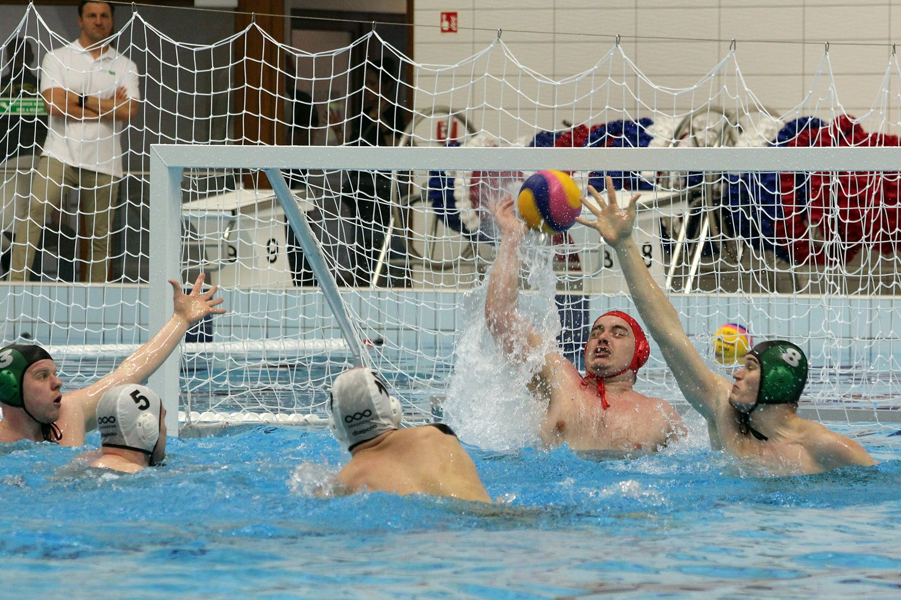

Edzésfelépítés a vízilabdában
A vízilabda edzésprogramja szorosan igazodik a sport igényeihez, beleértve az állóképesség, erő, technikai és taktikai felkészülést.
- Bemelegítés (10-15 perc): Szárazföldi és vízbeli gyakorlatokkal történik az izmok és ízületek felkészítése a terhelésre, például könnyű futás, dinamikus nyújtások, és könnyű úszás különböző úszásnemekben.
- Úszóedzés (20-30 perc): A vízilabdázóknak kiemelkedő úszóteljesítményt kell nyújtaniuk. Itt különféle technikai úszásgyakorlatok, gyorsasági és állóképességi feladatok kerülnek előtérbe.
- Technikai gyakorlatok (20-30 perc): Passzok, lövések, dobási technikák, valamint a labdavezetés fejlesztése képezi a technikai edzés gerincét.
- Taktikai gyakorlatok (30-40 perc): A csapat formációk, támadó és védekező helyzetek gyakorlása kulcsfontosságú. Valós játékszituációk modellezése révén a csapatok különféle stratégiákat tesztelnek.
- Erősítő edzés (20-30 perc): A felsőtest, törzs és alsótest erősítését célzó gyakorlatok, mint a súlyzós edzés, saját testsúlyos gyakorlatok és stabilitási feladatok.
- Levezetés és regeneráció (10-15 perc): Az edzés végén fontos a könnyű úszás és nyújtás, valamint a megfelelő táplálkozás, hogy a játékosok izmai gyorsan regenerálódjanak.
